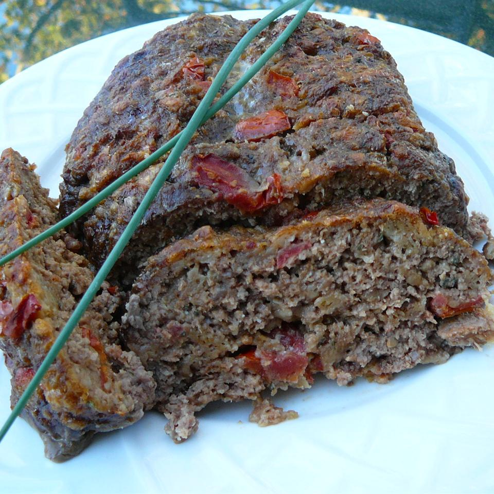

Meatloaf Recipe

Tired of boring meatloaf? Try this salsa-loaf variation.
Ingredients
- 1 pound ground beef
- 1 1/2 cups medium salsa
- 1/4 cup grated Parmesan cheese
- 1/4 cup shredded Monterey Jack cheese
- 1 egg
- 1 cup crushed saltine crackers
Steps
- Preheat oven to 350 degrees F (175 degrees C). Grease a 9x5 inch loaf pan.
- In a large bowl, mix together ground beef, salsa, cheese, egg, and cracker crumbs. Form into a loaf, and place in prepared pan.
- Bake for approximately 1 hour, or until done. Internal temperature should measure at least 160 degrees F (70 degrees C), the meat should be browned through, and the juices clear.